IDEFIX
La formation au logiciel
TermITH

Le but
Evaluer les résultats d'indexation(s) automatique(s)
Les ressources
- Mots-clés
- Titres
- Résumés
Mots-clés
- Mots-clés Indexation
- Mots-clés INIST
Aide dans l'interface

Comment ça marche ?
- Liste de documents

- Une page document

Les outils IDEFIX
- Timer
- Export
- Barres de progression
- Modes d'affichage
- Auto-complétion de commentaires
- Recherche de mots-clés
Manipulation de l'outil !
Accèder à votre application
goo.gl/eKQdsd(Attention aux majuscules)
Page d'accueil
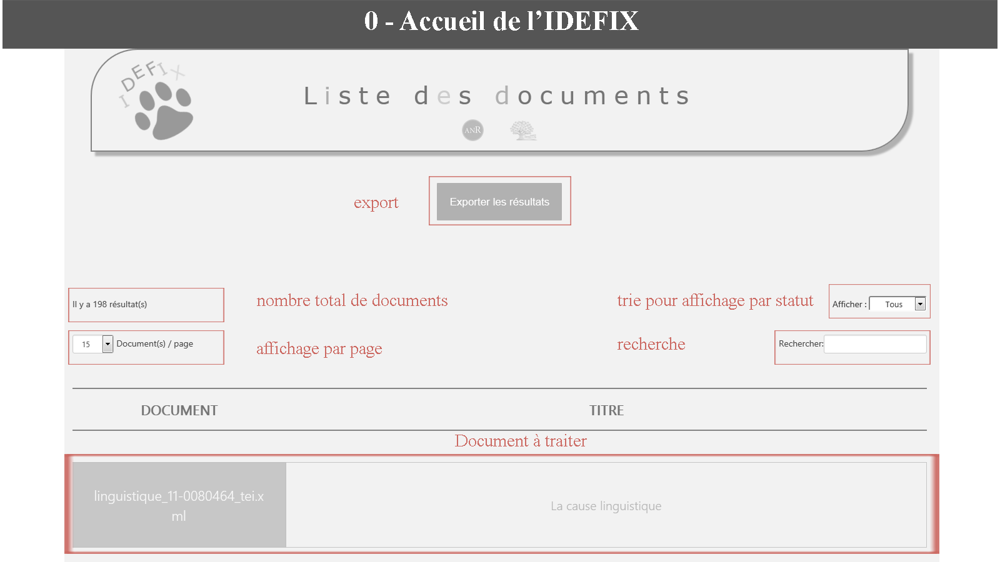Timer
Titre et résumé
Discipline

Methodes d'indexation
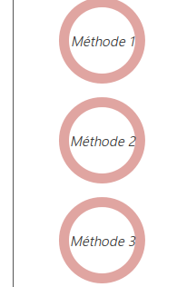Barre de progression
Flèche haut/bas
Affichage "Grille" et "Liste" des mots-clés
Scores et couleurs pour la pertinence
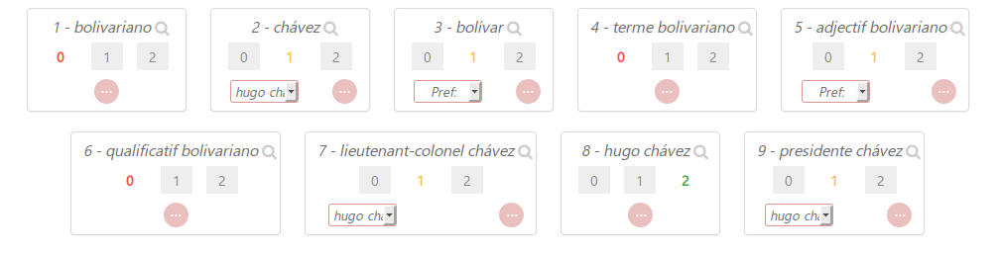Recherche de mot-clé
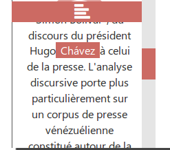 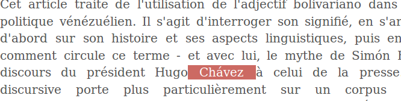Forme préférée
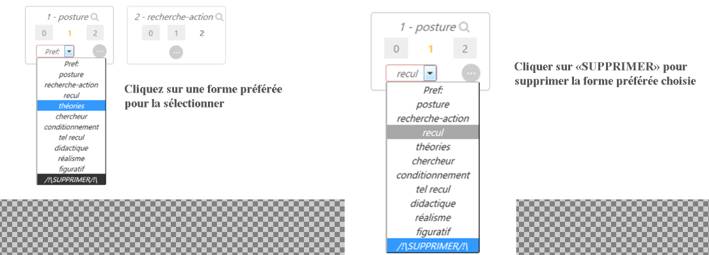Saisir un commentaire
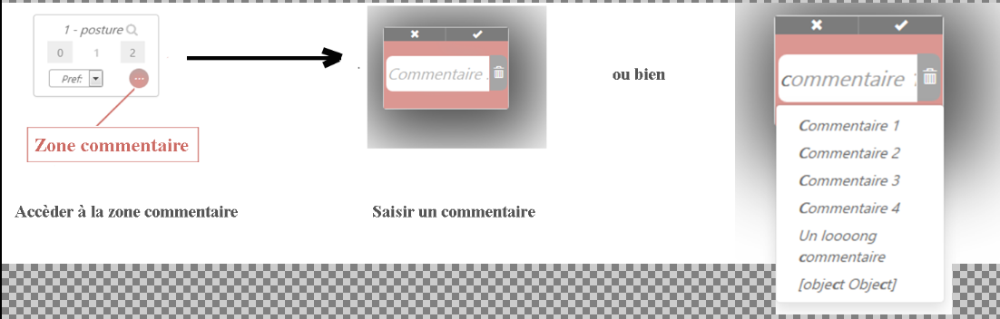Valider/Supprimer un commentaire
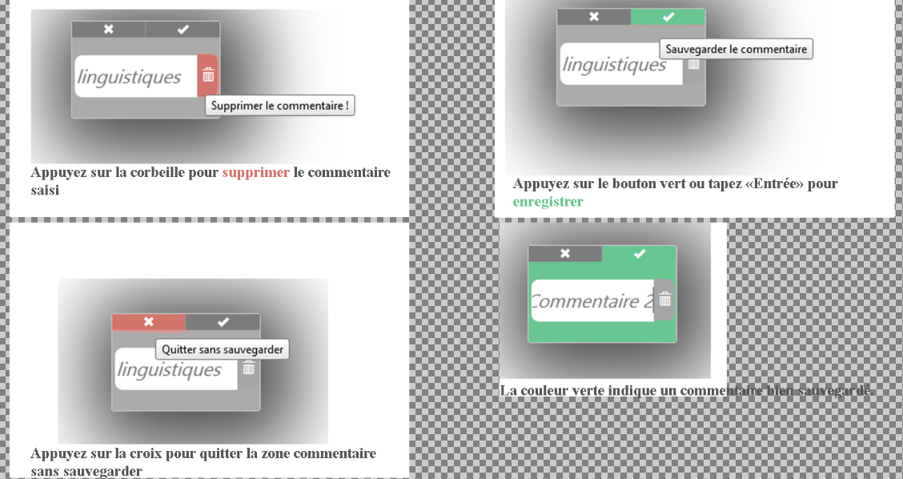Valider définitivement la pertinence
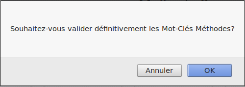 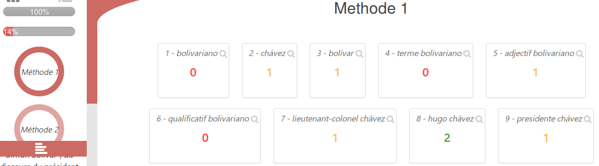Evaluer le silence
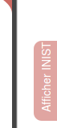 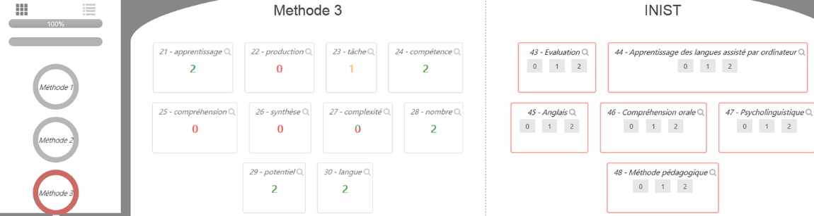 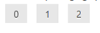Forme correspondante
Valider définitivement le silence
 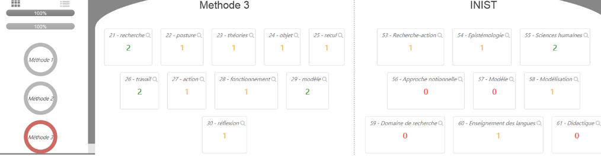
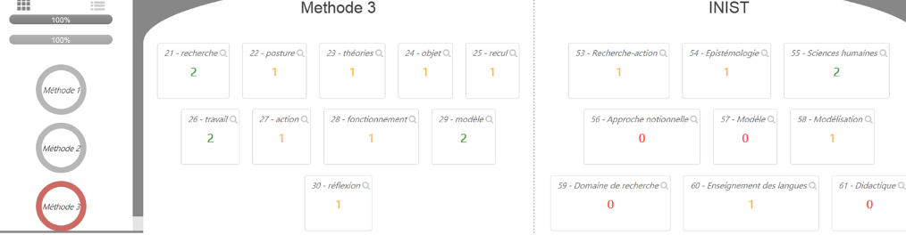
Exporter les résultats
- CSV
- XML
- XML-TEI